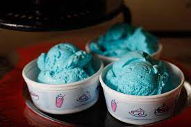

Blueberry Ice Cream

Description
We don't want to brag, but as far as vanilla ice cream recipes go, this one is the best. And with only four ingredients, it just might be the easiest, too. No ice cream maker? No problem. Just follow the directions below to learn how to make homemade ice cream by hand.
Ingredients
- 2 cups heavy whipping cream
- 2 cups half-and-half cream
- 1 cup sugar
- 2 teaspoons vanilla extract
Steps
- Combine all ingredients, stirring to dissolve sugar completely.
- Fill cylinder of ice cream maker no more than two-thirds full
- freeze according to manufacturer's directions
- Serve immediately or store in covered containers